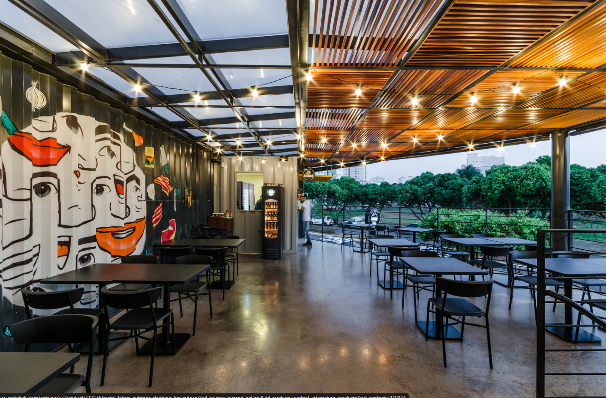
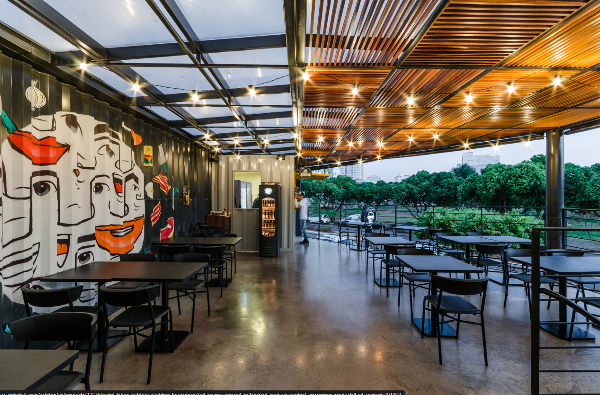

Bem-vindo à Diiner's Burgers, o ponto de encontro gastronômico onde a paixão pela comida se une à tradição de sabores autênticos. Localizada no coração de Franca-SP, nossa hamburgueria é o resultado da visão compartilhada de cinco amigos: Leonardo, Vinícius, João, Luís e Maria Luiza. Juntos, eles trouxeram para a cidade uma experiência culinária única, onde cada hambúrguer é uma obra-prima de sabor e qualidade.
Na Diiner's Burgers, não nos contentamos com o básico. Nossa missão é reinventar o conceito de hambúrguer, elevando-o a novos patamares de excelência. Utilizamos apenas os ingredientes mais frescos e selecionados, combinados de forma criativa para criar uma explosão de sabores em cada mordida. Cada hambúrguer é cuidadosamente preparado para garantir uma experiência gastronômica inesquecível.
Nossa equipe é apaixonada por proporcionar momentos memoráveis aos nossos clientes. Do atendimento caloroso à atmosfera acolhedora, queremos que todos se sintam em casa na Diiner's Burgers. Estamos aqui para oferecer não apenas comida, mas uma experiência completa, onde cada detalhe é cuidadosamente pensado para encantar os sentidos.
Seja para uma refeição rápida com os amigos ou para um jantar especial em família, a Diiner's Burgers é o destino perfeito para os amantes de hambúrgueres em Franca-SP. Venha nos visitar e descubra por que somos a escolha preferida dos que buscam qualidade, sabor e hospitalidade genuína em cada pedaço.
Na Dinners Burger, acreditamos que um bom hambúrguer começa com os melhores ingredientes. Utilizamos apenas carne bovina 100% Angus, garantindo sabor e suculência em cada mordida. Nossos pães são fresquinhos, fornecidos diariamente por padarias locais, e nossos vegetais são orgânicos e colhidos no auge da frescura.
Na Dinners Burger, estamos comprometidos em proporcionar uma experiência culinária excepcional, sustentada por ingredientes de alta qualidade, práticas sustentáveis, inovação constante e um profundo respeito pela comunidade. Cada hambúrguer que servimos é uma celebração da nossa dedicação a esses valores.
Venha nos visitar e experimente a diferença que faz quando se coloca paixão em cada detalhe. Estamos ansiosos para recebê-lo na Dinners Burger onde cada mordida é uma experiência inesquecível.
 
